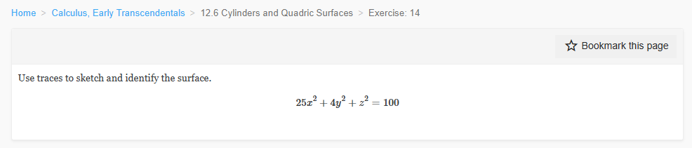
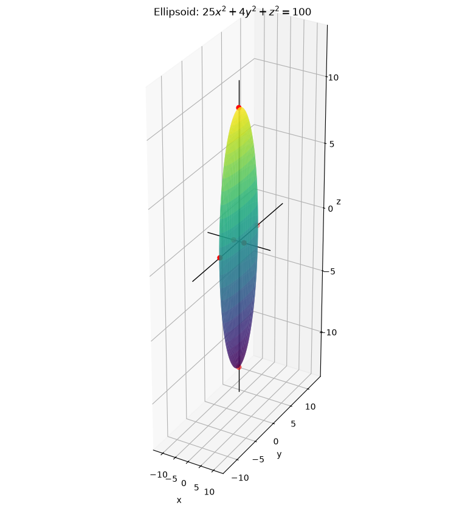
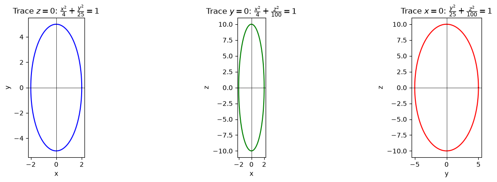
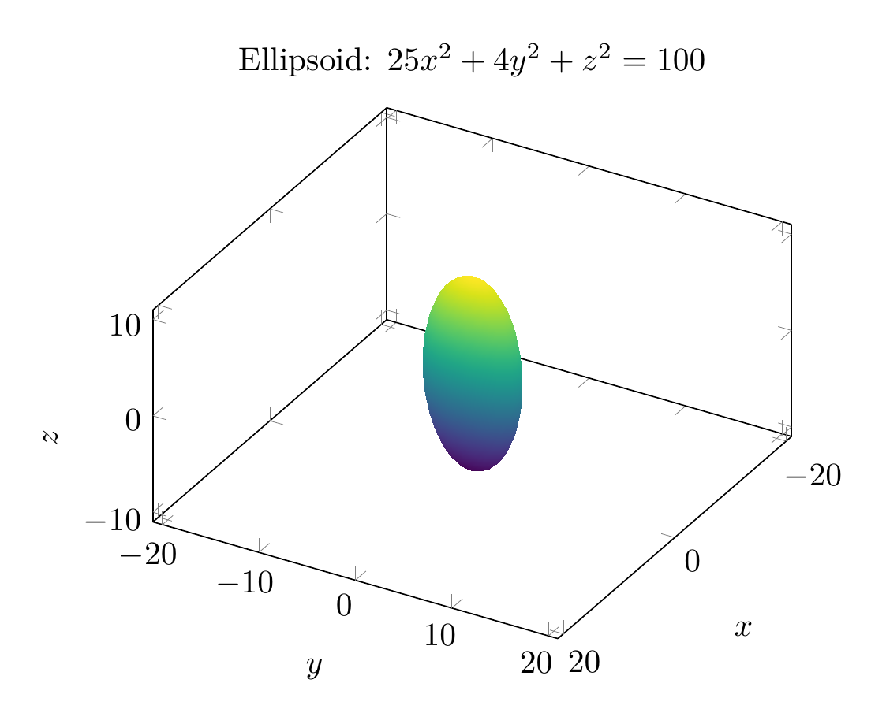
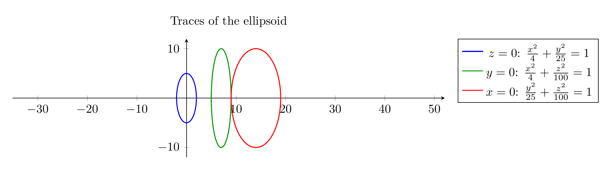

Path: mcma-Kimi-K2.7-Code/calculus-12.6.14/chat_20260825_023926_309823_utc_0800
Problem
Please solve the math problem in the image.

End of problem
Answer
# Identifying the Surface $25x^2+4y^2+z^2=100$
## 1. Put the equation in standard form
Divide both sides by $100$:
$$
\frac{x^2}{4}+\frac{y^2}{25}+\frac{z^2}{100}=1.
$$
This matches the standard equation of an **ellipsoid**:
$$
\frac{x^2}{a^2}+\frac{y^2}{b^2}+\frac{z^2}{c^2}=1.
$$
So $a^2=4$, $b^2=25$, $c^2=100$, giving
$$
a=2,\qquad b=5,\qquad c=10.
$$
The surface is centered at the origin and intercepts the axes at $(\pm 2,0,0)$, $(0,\pm 5,0)$, and $(0,0,\pm 10)$.
## 2. Use traces to confirm
A trace is the intersection of the surface with a plane parallel to one of the coordinate planes.
### Trace in the $xy$-plane ($z=0$)
$$
25x^2+4y^2=100 \quad\Longrightarrow\quad \frac{x^2}{4}+\frac{y^2}{25}=1.
$$
This is an ellipse with semi-axes $2$ along $x$ and $5$ along $y$.
### Trace in the $xz$-plane ($y=0$)
$$
25x^2+z^2=100 \quad\Longrightarrow\quad \frac{x^2}{4}+\frac{z^2}{100}=1.
$$
This is an ellipse with semi-axes $2$ along $x$ and $10$ along $z$.
### Trace in the $yz$-plane ($x=0$)
$$
4y^2+z^2=100 \quad\Longrightarrow\quad \frac{y^2}{25}+\frac{z^2}{100}=1.
$$
This is an ellipse with semi-axes $5$ along $y$ and $10$ along $z$.
Every horizontal or vertical trace is an ellipse (or a point when the plane is tangent), which is the defining property of an ellipsoid.
## 3. Conclusion
The surface is an **ellipsoid** centered at the origin with semi-axes $2$, $5$, and $10$ along the $x$-, $y$-, and $z$-axes, respectively.
$$\boxed{\text{The surface is an ellipsoid: } \frac{x^2}{4}+\frac{y^2}{25}+\frac{z^2}{100}=1}$$
---


\documentclass[border=10pt]{standalone}
\usepackage{pgfplots}
\pgfplotsset{compat=1.18}
\begin{document}
\begin{tikzpicture}
\begin{axis}[
view={120}{30},
xlabel=$x$, ylabel=$y$, zlabel=$z$,
xmin=-3, xmax=3,
ymin=-6, ymax=6,
zmin=-11, zmax=11,
axis equal,
title={Ellipsoid: $25x^2+4y^2+z^2=100$},
colormap/viridis
]
\addplot3[
surf,
shader=interp,
samples=40,
samples y=60,
domain=0:180,
y domain=0:360,
z buffer=sort
]
({2*sin(x)*cos(y)}, {5*sin(x)*sin(y)}, {10*cos(x)});
\end{axis}
\end{tikzpicture}
\end{document}

\documentclass[border=10pt]{standalone}
\usepackage{pgfplots}
\pgfplotsset{compat=1.18}
\begin{document}
\begin{tikzpicture}
\begin{axis}[
width=14cm, height=5cm,
axis equal,
axis lines=middle,
enlargelimits=true,
title={Traces of the ellipsoid},
legend pos=outer north east
]
\addplot[blue, thick, domain=0:360, samples=200, variable=\t]
({2*cos(\t)}, {5*sin(\t)});
\addplot[green!60!black, thick, domain=0:360, samples=200, variable=\t]
({2*cos(\t)+7}, {10*sin(\t)});
\addplot[red, thick, domain=0:360, samples=200, variable=\t]
({5*cos(\t)+14}, {10*sin(\t)});
\legend{$z=0$: $\frac{x^2}{4}+\frac{y^2}{25}=1$,
$y=0$: $\frac{x^2}{4}+\frac{z^2}{100}=1$,
$x=0$: $\frac{y^2}{25}+\frac{z^2}{100}=1$}
\end{axis}
\end{tikzpicture}
\end{document}

End of answer